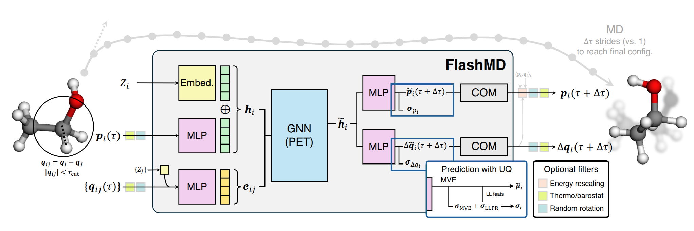

Note
Go to the end to download the full example code.
Long-stride trajectories with a universal FlashMD model¶
- Authors:
Michele Ceriotti @ceriottm
For a quickstart on how to use FlashMD with ASE, you can go here.
This example demonstrates how to run long-stride molecular dynamics using the universal FlashMD model. FlashMD predicts directly positions and momenta of atoms at a later time based on the current positions and momenta. It is trained to reproduce MD trajectories at the r2SCAN level of theory. You can read more about the model and its limitations in this preprint.
# sphinx_gallery_thumbnail_path = '../../examples/flashmd/flashmd-scheme.png'
Start by importing the required libraries. You will need FlashMD and a recent version of i-PI.
pip install flashmd ipi
import chemiscope
from flashmd import get_pretrained
from flashmd.ipi import get_npt_stepper, get_nvt_stepper
from ipi.utils.parsing import read_output, read_trajectory
from ipi.utils.scripting import InteractiveSimulation
A rough schematic of the architecture of FlashMD is shown below. Each model is trained for a specific stride length, aiming to reproduce the trajectories obtained with a traditional velocity Verlet integrator.
We start by getting the FlashMD models from the flashmd package.
We will also use a PET model trained on the MATPES dataset as the accompanying energy
model
device = "cpu" # change to "cuda" if you have a GPU; don't forget to change it in the
# i-PI xml input files as well!
mlip_model, flashmd_model_16 = get_pretrained("pet-omatpes", 16)
mlip_model, flashmd_model_64 = get_pretrained("pet-omatpes", 64)
# We save the MLIP model to disk, since i-PI needs to read it from a file
mlip_model.save("pet-omatpes.pt")
Al(110) surface dynamics¶
The (110) surface of aluminum exhibits an interesting dynamical behavior well below the bulk melting temperature. This manifests itself in the spontaneous formation of surface defects, with mobile adatoms emerging at the surface.
We run a FlashMD simulation with 64 fs strides (as opposed to 1 or 2 fs) at
600 K, observing the motion of the adatom at the surface. We use the
i-PI scripting API to set up the simulation and run it interactively.
The starting point is a “base” XML file that contains the setup for a traditional MD simulation in i-PI. It contains the MLIP as the potential energy calculator (needed for the optional energy rescaling filter), and the only difference is the use of a much larger large time step than conventional MD.
with open("data/input-al110-base.xml", "r") as input_xml:
sim = InteractiveSimulation(input_xml)
@system: Initializing system object
@simulation: Initializing simulation object
@ RANDOM SEED: The seed used in this calculation was 32123
@init_file: Initializing from file data/al110.xyz. Dimension: length, units: automatic, cell_units: automatic
@init_file: Initializing from file data/al110.xyz. Dimension: length, units: automatic, cell_units: automatic
@init_file: Initializing from file data/al110.xyz. Dimension: length, units: automatic, cell_units: automatic
@init_file: Initializing from file data/al110.xyz. Dimension: length, units: automatic, cell_units: automatic
@init_file: Initializing from file data/al110.xyz. Dimension: length, units: automatic, cell_units: automatic
@initializer: Resampling velocities at temperature 600.0 kelvin
@system.bind: Binding the forces
To run FlashMD, we set up a custom step, using the get_nvt_stepper
utility function from the flashmd.ipi module. Note the filters
rescale_energy=False and random_rotation=True. You can turn the former on to
ensure that the total energy of the system is conserved, at the cost of one extra
energy evaluation per step, while the latter is inexpensive and allows for random
rotations of the system, which is useful to correct for the fact that the model is not
exactly equivariant with respect to rotations. Note that the xml input uses
the option non-conservative:True: only the energy is needed to monitor and
correct for energy drift, and given that i-PI always evaluates also forces for good
measure, using a non-conservative model reduces the overead associated with the
potential energy evaluations that would occur when using rescale_energy=True.
sim.set_motion_step(
get_nvt_stepper(
sim, flashmd_model_64, device, rescale_energy=False, random_rotation=True
)
)
# We run for 16 steps -- this is a large box, and it's rather slow on CPU...
# ...but it's equivalent to more than 1 ps with FlashMD's 64 fs time steps!
sim.run(16)
@simulation.run: Average timings at MD step 0. t/step: 7.70142e+00
The trajectory is stable, and one can check that the mean fluctuations of the adatom are qualitatively correct, by comparing with a (much slower) MLIP simulation.
data, info = read_output("al110-nvt-flashmd.out")
trj = read_trajectory("al110-nvt-flashmd.pos_0.extxyz")
chemiscope.show(
structures=trj,
properties={
"time": data["time"],
"potential": data["potential"],
"temperature": data["temperature"],
},
mode="default",
settings=chemiscope.quick_settings(
map_settings={
"x": {"property": "time", "scale": "linear"},
"y": {"property": "potential", "scale": "linear"},
},
structure_settings={
"unitCell": True,
},
trajectory=True,
),
)

Solvated alanine dipeptide¶
As a second example, we run a constant-pressure simulation of explicitly
solvated alanine dipeptide, using the FlashMD universal model with 16 fs
time steps (note that normal MD would require 0.5 fs steps). The setup
is very similar to the previous example, but we use an input template
that contains a NpT setup, and we use the get_npt_stepper utility
function to set up a stepper that combines the FlashMD velocity-Verlet
step with cell updates.
Note that the MLIP is now also used to obtain stresses by backpropagation (and not only energies to enforce energy conservation). Therefore, compared to the NVT run, we disable non-conservative mode for the MLIP in the xml file. As long as the cell degrees of freedom are thermostatted, like in this case, disabling non-conservative mode wouldn’t strictly be necessary to obtain a stable run.
with open("data/input-ala2-base.xml", "r") as input_xml:
sim = InteractiveSimulation(input_xml)
sim.set_motion_step(
get_npt_stepper(
sim, flashmd_model_16, device, rescale_energy=True, random_rotation=True
)
)
# only run 2 steps: as for all modern MLIPs, serious simulations require a GPU
sim.run(2)
@system: Initializing system object
@simulation: Initializing simulation object
@ RANDOM SEED: The seed used in this calculation was 32123
@init_file: Initializing from file data/ala2.xyz. Dimension: length, units: automatic, cell_units: automatic
@init_file: Initializing from file data/ala2.xyz. Dimension: length, units: automatic, cell_units: automatic
@init_file: Initializing from file data/ala2.xyz. Dimension: length, units: automatic, cell_units: automatic
@init_file: Initializing from file data/ala2.xyz. Dimension: length, units: automatic, cell_units: automatic
@init_file: Initializing from file data/ala2.xyz. Dimension: length, units: automatic, cell_units: automatic
@initializer: Resampling velocities at temperature 450.0 kelvin
@system.bind: Binding the forces
@simulation.run: Average timings at MD step 0. t/step: 5.86289e+01
@open_backup: Backup performed: RESTART -> #RESTART#0#
The cell fluctuates around the equilibrium volume, in a way that is consistent with the correct NpT ensemble. The trajectory is stable and the alanine molecule explores the different conformations (obviously when running for a reasonably long time).
data, info = read_output("ala2-npt-flashmd.out")
trj = read_trajectory("ala2-npt-flashmd.pos_0.extxyz")
chemiscope.show(
structures=trj,
properties={
"time": data["time"],
"volume": data["volume"],
"potential": data["potential"],
"pressure": data["pressure_md"],
"temperature": data["temperature"],
},
mode="default",
settings=chemiscope.quick_settings(
map_settings={
"x": {"property": "time", "scale": "linear"},
"y": {"property": "volume", "scale": "linear"},
},
structure_settings={
"unitCell": True,
},
trajectory=True,
),
)
Total running time of the script: (5 minutes 11.214 seconds)